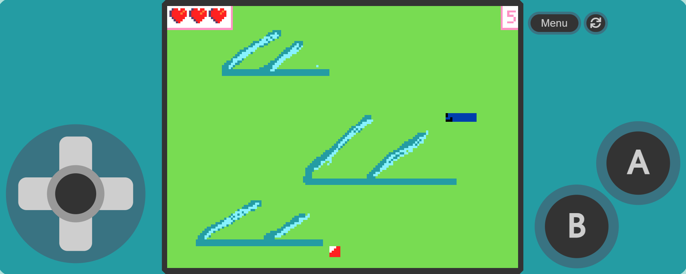

Spacecheap Adventures
Godot - GDScript
Novembre 2024 - Janvier 2025
Projet de groupe noté pour la première année de BTS.
On a eu le choix de créer n'importe quel projet de développement. On a choisi de faire un jeu vidéo.
On l'a fait sur Godot car on a trouvé intéressant de faire original vu que la tendance est plus portée sur Unity et Unreal Engine.
Dans ce jeu, on contrôle un vaisseau spatial devant tirer sur des astéroïdes. Plus on reste en vie longtemps, plus on gagne de points.
La partie est perdue quand on touche un astéroïde.

Snake Remastered
Microsoft MakeCode Arcade
Février 2026
Projet créé dans le cadre de la journée de stage découverte organisée par Ynov Campus Lyon.
Durant la matinée, on a appris les fondamentaux de la logique de la programmation en créant un jeu inspiré du Snake sur Microsoft MakeCode Arcade.
Dans ma version, le joueur a 3 vies au lieu d'une, il gagne la partie une fois qu'il a atteint 100 points et toutes les 10 pommes avalées, un monstre apparaît et
pourchasse le joueur. Il faut l'éviter dans le temps imparti pour rester en vie et continuer la partie.

Trouver le Nombre Mystère
HTML - JavaScript
Février 2026
Projet créé dans le cadre de la journée de stage découverte organisée par Ynov Campus Lyon.
Ce projet nous a permis d'apprendre les bases de JavaScript.
Dans ce jeu, il faut deviner un nombre généré aléatoirement entre 1 et 100 avec des indications "trop grand" ou "trop petit".

Assistant IA Ollama
HTML - CSS - JavaScript
Février 2026
Projet créé dans le cadre d'un atelier organisé par Supinfo Lyon.
Accompagné par un intervenant, on doit créé une interface de chatbot IA se basant sur le modèle d'Ollama.
Cette activité nous a permis d'apprendre plus en profondeur le HTML, le CSS et le JavaScript.

Gestion de course CoVACIEL
C++ - HTML - CSS - JavaScript - PHP
Janvier 2026 - Mai 2026
Projet de groupe noté pour la seconde année de BTS.
Il a été imposé par les professeurs qui nous ont inscrit au concours CoVACIEL regroupant tous les BTS CIEL de France dans des courses de voitures autonomes.
Mon groupe s'occupe de gérer la course. De mon coté, je dois concevoir la solution de chronométrage et une IHM qui affiche des informations pour les spectateurs.

Mon Portfolio
HTML - CSS - JavaScript
Février 2026 - Mars 2026
Ce même portfolio où vous êtes actuellement. :)
Ma 2e création de site web après celui que j'ai fais en stage de 1ère année de BTS.
Ici, je vous présente mes compétences, mon parcours, mes projets entre autres.
Vous pouvez également retrouver tous mes réseaux sociaux en page d'accueil. N'hésitez pas à y faire un tour. ;)